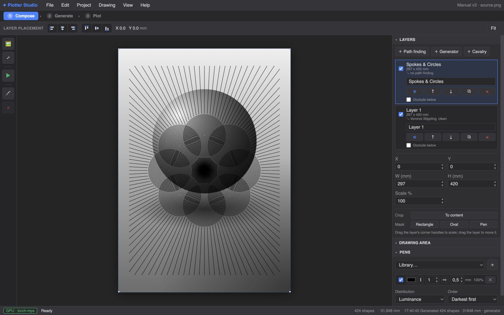

Layers are the whole game: every path-finding result, generator drawing and imported SVG is a layer on the page. The Composition step is where they become one picture.

Drag a layer on the canvas to move it; edges snap to the page and to other layers' edges and centers (guide lines flash as you hit them). The toolbar's six align buttons align the selected layer to the page: left / center / right, top / middle / bottom. Grab a corner handle to scale; pen widths stay true — only the geometry scales.
Two ways to show only part of a layer, both non-destructive:
Masks are real geometric clips: exported SVG and the plot contain only the visible strokes, cut exactly at the boundary — no hidden ink.
Turn on Occlude below and a layer erases the strokes of every layer beneath it inside its silhouette — a portrait region cleanly knocked out of the background hatching, no manual masking of the layers below. Region-based layers use their AI-selected outline; whole-image layers use their footprint. The clipping is baked into export and plot.
＋ Cavalry arms a live layer that receives frames from Cavalry (the motion-design app) via the bundled bridge script. In Cavalry, the script panel's button creates a matching A3 composition; every change pushes the current frame straight onto your Plotter Studio page — design in Cavalry, compose and plot here. The layer shows a LIVE badge while connected, and reconnecting after a restart offers to continue the same layer or start a new one.
Drop an .svg on the window (or File → Import image…
and pick an SVG): it arrives as a composition layer, normalized to the page
in real millimetres. Pixel-based exports (like Cavalry's) are fitted to the
page automatically so a 1080 px file doesn't try to plot a metre wide.
View → Pen width & nib draws every stroke at its true pen width — including the calligraphic broad-nib simulation for flat pens (set nib shape and angle in the Pens panel). Turn it off to inspect raw centrelines.